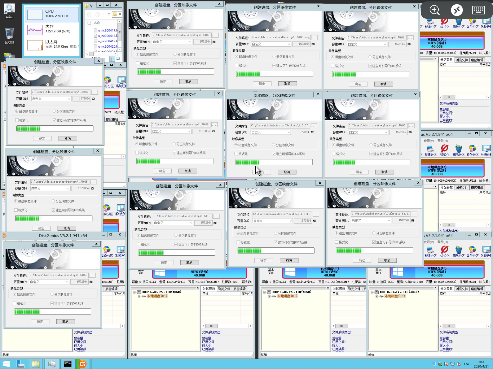
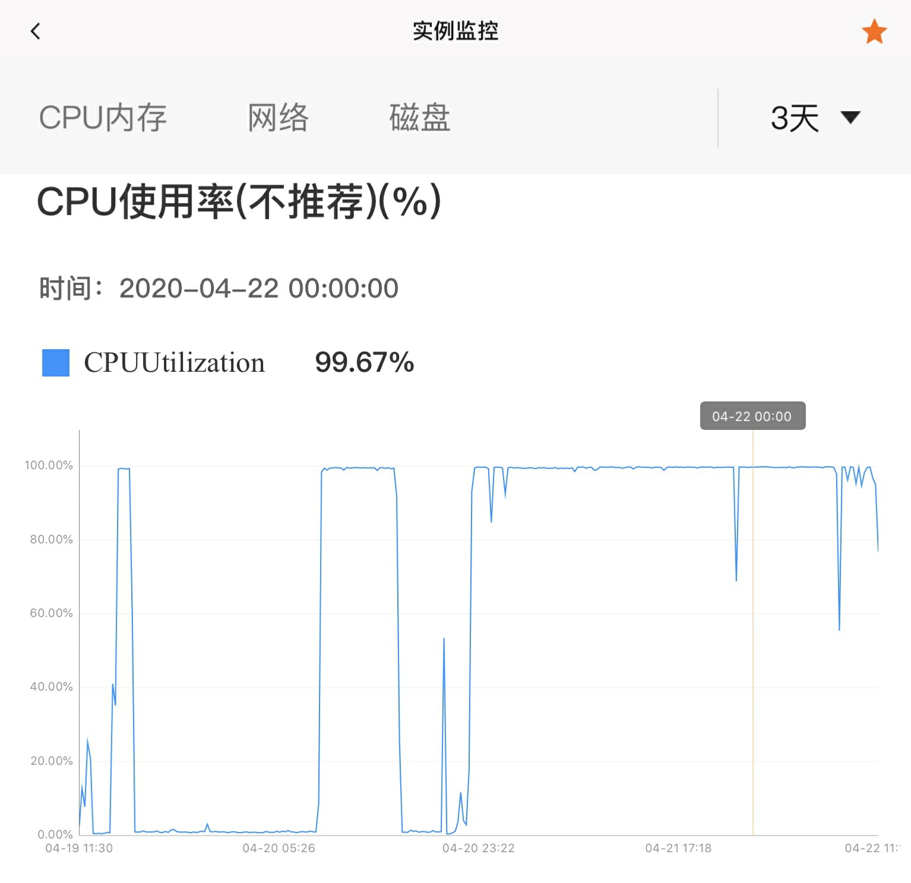
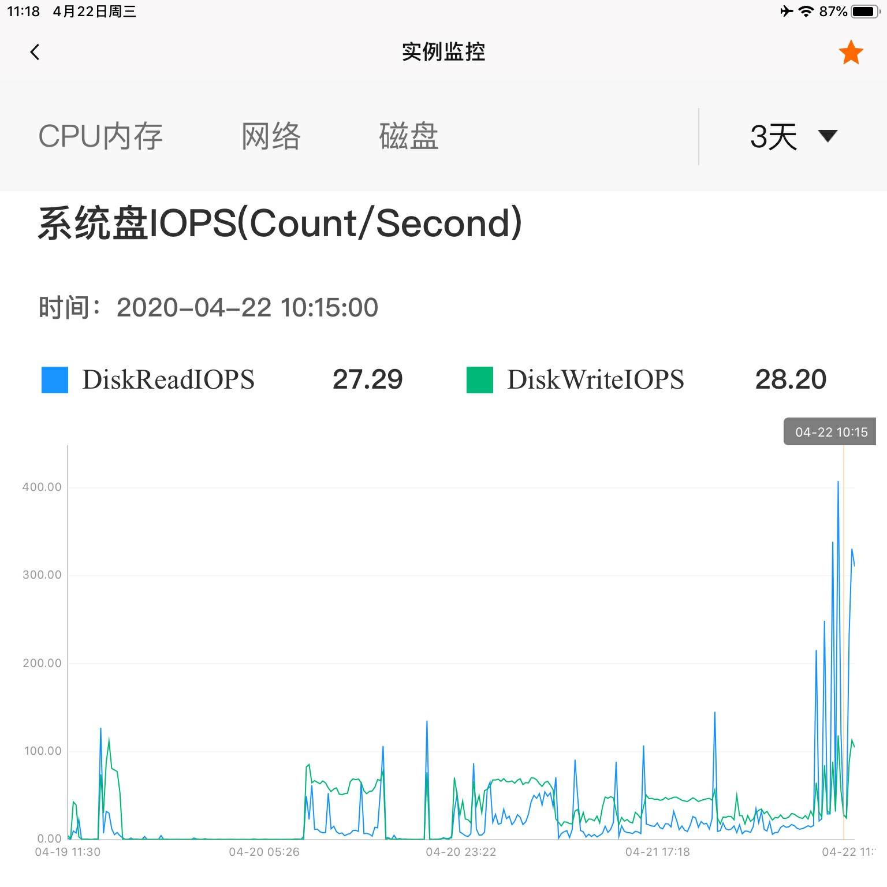
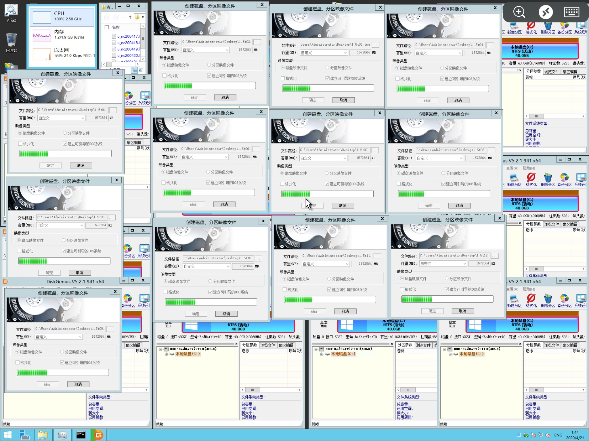
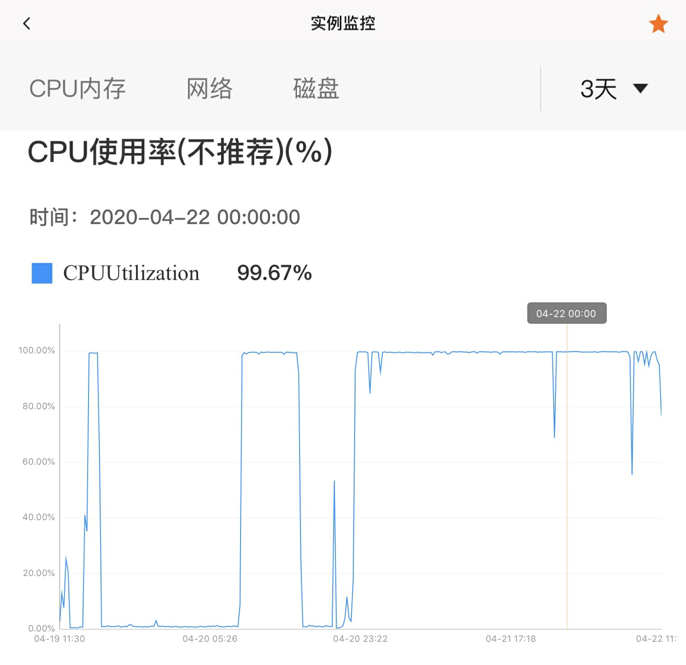
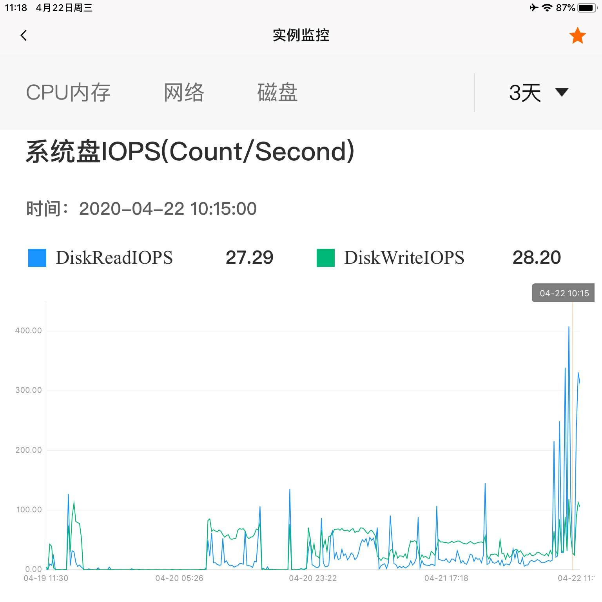
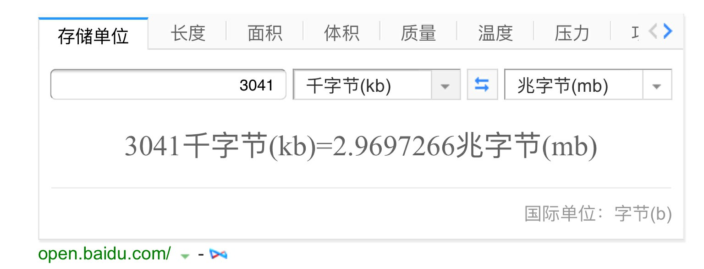
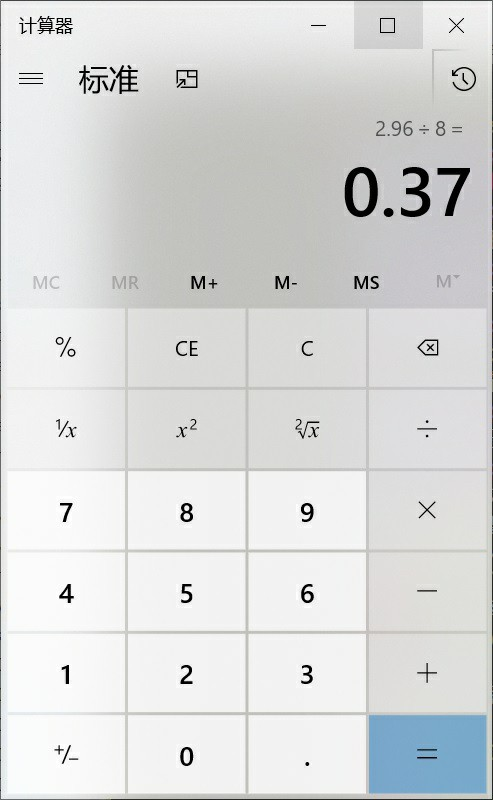

“今天干了件大好事”
I Did A Good Thing Today
2020/04/20 分类：以后都不写分类了
I Did A Good Thing Today
2020/04/20 分类：以后都不写分类了
**图是后面补的
嗨呀！！！
今天疯狂损耗阿里云的云硬盘。
往里边创建了18TB的“大文件”。


真的，建议改成：硬 盘 测 试
不过谈到速度，这个就有点蛋疼。
这里是写入6小时后的占用数据总览

（感觉空出一片对强迫症不太友好)

(警告：随便猜的！别当真)
PS:最近我想了想还是取消了禁止F12，打开控制台(侧边)、保存页面、右键和字符选择，毕竟几乎封死了所有一般人复制的手段还挂CC协议真的是在耍流氓。
嗨呀！！！
今天疯狂损耗阿里云的云硬盘。
往里边创建了18TB的“大文件”。

1.5太字节*12个同时创建
完成图
我开了磁盘压缩，所以实际上是有写入数据，但是占用空间48KB。真的，建议改成：硬 盘 测 试
不过谈到速度，这个就有点蛋疼。
这里是写入6小时后的占用数据总览

（感觉空出一片对强迫症不太友好)

各种数据(3天内)
可以看到，写入速度大概是3041Kbps上下，换算成Mbps也就2.96Mbps 而众所周知，Mbps换算M/s要除以8(就像我的服务器带宽1Mbps，最大下载速度也就140K/s上下) 换算结果
计算结果
最终呢，就是0.37M/s，这TM是USB2.0的WTG吗.(警告：随便猜的！别当真)
PS:最近我想了想还是取消了禁止F12，打开控制台(侧边)、保存页面、右键和字符选择，毕竟几乎封死了所有一般人复制的手段还挂CC协议真的是在耍流氓。